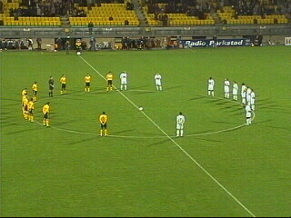
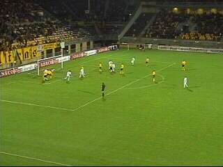

|
Roda JC - ADO Den Haag (5-1) 31 oktober 2003 |
Het grote doek was er weer op west.

1 min. stilte vanwege een 4-voudige moord in
Kerkrade.
400 Hagenezen waarvan een groot deel op
eigen vervoer.
Vicelich scoort 1-0 uit een door Anastasiou
teruggelegde voorzet van Van Dessel (17').

3 min. later scoort Cales alweer de gelijkmaker.
Enkele Hagenezen gooiden vuurwerk in de
oostvakken....
Zeldzaam: Sonko heeft een klap uitgedeeld.
Vicelich die weet dat NieuwZeeland-TV aan de
zijlijn staat, scoort zijn tweede (43').
Na een superblunder van doelman Jansen kan
SuperSonko simpel scoren: 3-1 (72').

10 min. later scoort invaller Kone 4-1.
L*O*V*E
Vicelich maakt zijn feestje compleet door in de
87e min. 5-1 te scoren!
Het kost vele biertjes, pretsigaretjes,
dansjes,

en goede gesprekken aleer....
...het f#cking schaatsen plaatsmaakt voor het
voetbal met in de hoofdrol Ivan Vicelich!!!
Op de voorgrond, het perfecte 11-tal (tel 't na)!

Kick Off die-hards.